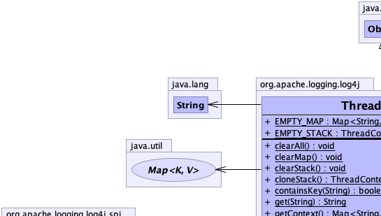
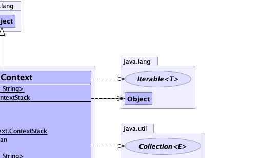
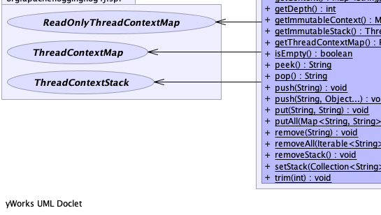
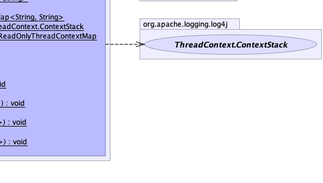

public final class ThreadContext
extends java.lang.Object
The MDC is managed on a per thread basis. To enable automatic inheritance of copies of the MDC to newly created threads, enable the Log4j system property.
|  |  |
|  |  |
| Modifier and Type | Class and Description |
|---|---|
static interface |
ThreadContext.ContextStack
The ThreadContext Stack interface.
|
| Modifier and Type | Field and Description |
|---|---|
static java.util.Map<java.lang.String,java.lang.String> |
EMPTY_MAP
Empty, immutable Map.
|
static ThreadContextStack |
EMPTY_STACK
Empty, immutable ContextStack.
|
| Modifier and Type | Method and Description |
|---|---|
static void |
clearAll()
Clears the context map and stack.
|
static void |
clearMap()
Clears the context map.
|
static void |
clearStack()
Clears the stack for this thread.
|
static ThreadContext.ContextStack |
cloneStack()
Returns a copy of this thread's stack.
|
static boolean |
containsKey(java.lang.String key)
Determines if the key is in the context.
|
static java.lang.String |
get(java.lang.String key)
Gets the context value identified by the
key parameter. |
static java.util.Map<java.lang.String,java.lang.String> |
getContext()
Returns a mutable copy of current thread's context Map.
|
static int |
getDepth()
Gets the current nesting depth of this thread's stack.
|
static java.util.Map<java.lang.String,java.lang.String> |
getImmutableContext()
Returns an immutable view of the current thread's context Map.
|
static ThreadContext.ContextStack |
getImmutableStack()
Gets an immutable copy of this current thread's context stack.
|
static ReadOnlyThreadContextMap |
getThreadContextMap()
Returns a read-only view of the internal data structure used to store thread context key-value pairs,
or
null if the internal data structure does not implement the
ReadOnlyThreadContextMap interface. |
static boolean |
isEmpty()
Returns true if the Map is empty.
|
static java.lang.String |
peek()
Looks at the last diagnostic context at the top of this NDC without removing it.
|
static java.lang.String |
pop()
Returns the value of the last item placed on the stack.
|
static void |
push(java.lang.String message)
Pushes new diagnostic context information for the current thread.
|
static void |
push(java.lang.String message,
java.lang.Object... args)
Pushes new diagnostic context information for the current thread.
|
static void |
put(java.lang.String key,
java.lang.String value)
Puts a context value (the
value parameter) as identified with the key parameter into
the current thread's context map. |
static void |
putAll(java.util.Map<java.lang.String,java.lang.String> m)
Puts all given context map entries into the current thread's
context map.
|
static void |
remove(java.lang.String key)
Removes the context value identified by the
key parameter. |
static void |
removeAll(java.lang.Iterable<java.lang.String> keys)
Removes the context values identified by the
keys parameter. |
static void |
removeStack()
Removes the diagnostic context for this thread.
|
static void |
setStack(java.util.Collection<java.lang.String> stack)
Sets this thread's stack.
|
static void |
trim(int depth)
Trims elements from this diagnostic context.
|
public static final java.util.Map<java.lang.String,java.lang.String> EMPTY_MAP
public static final ThreadContextStack EMPTY_STACK
public static void put(java.lang.String key,
java.lang.String value)
value parameter) as identified with the key parameter into
the current thread's context map.
If the current thread does not have a context map it is created as a side effect.
key - The key name.value - The key value.public static void putAll(java.util.Map<java.lang.String,java.lang.String> m)
If the current thread does not have a context map it is created as a side effect.
m - The map.public static java.lang.String get(java.lang.String key)
key parameter.
This method has no side effects.
key - The key to locate.public static void remove(java.lang.String key)
key parameter.key - The key to remove.public static void removeAll(java.lang.Iterable<java.lang.String> keys)
keys parameter.keys - The keys to remove.public static void clearMap()
public static void clearAll()
public static boolean containsKey(java.lang.String key)
key - The key to locate.public static java.util.Map<java.lang.String,java.lang.String> getContext()
public static java.util.Map<java.lang.String,java.lang.String> getImmutableContext()
public static ReadOnlyThreadContextMap getThreadContextMap()
null if the internal data structure does not implement the
ReadOnlyThreadContextMap interface.
The DefaultThreadContextMap implementation does not implement ReadOnlyThreadContextMap, so by
default this method returns null.
nullThreadContextMapFactory,
DefaultThreadContextMap,
CopyOnWriteSortedArrayThreadContextMap,
GarbageFreeSortedArrayThreadContextMappublic static boolean isEmpty()
public static void clearStack()
public static ThreadContext.ContextStack cloneStack()
public static ThreadContext.ContextStack getImmutableStack()
public static void setStack(java.util.Collection<java.lang.String> stack)
stack - The stack to use.public static int getDepth()
trim(int)public static java.lang.String pop()
The returned value is the value that was pushed last. If no context is available, then the empty string "" is returned.
public static java.lang.String peek()
The returned value is the value that was pushed last. If no context is available, then the empty string "" is returned.
public static void push(java.lang.String message)
The contents of the message parameter is determined solely by the client.
message - The new diagnostic context information.public static void push(java.lang.String message,
java.lang.Object... args)
The contents of the message and args parameters are determined solely by the client. The message
will be treated as a format String and tokens will be replaced with the String value of the arguments in
accordance with ParameterizedMessage.
message - The new diagnostic context information.args - Parameters for the message.public static void removeStack()
Each thread that created a diagnostic context by calling push(java.lang.String) should call this method before exiting.
Otherwise, the memory used by the thread cannot be reclaimed by the VM.
As this is such an important problem in heavy duty systems and because it is difficult to always guarantee that
the remove method is called before exiting a thread, this method has been augmented to lazily remove references
to dead threads. In practice, this means that you can be a little sloppy and occasionally forget to call
remove(java.lang.String) before exiting a thread. However, you must call remove sometime. If you never call
it, then your application is sure to run out of memory.
public static void trim(int depth)
maxDepth,
then no action is taken. If the current depth is larger than newDepth then all elements at maxDepth or higher are
discarded.
This method is a convenient alternative to multiple pop() calls. Moreover, it is often the case that at
the end of complex call sequences, the depth of the ThreadContext is unpredictable. The trim method
circumvents this problem.
For example, the combination
void foo() {
final int depth = ThreadContext.getDepth();
// ... complex sequence of calls
ThreadContext.trim(depth);
}
ensures that between the entry and exit of foo the depth of the diagnostic stack is conserved.
depth - The number of elements to keep.getDepth()